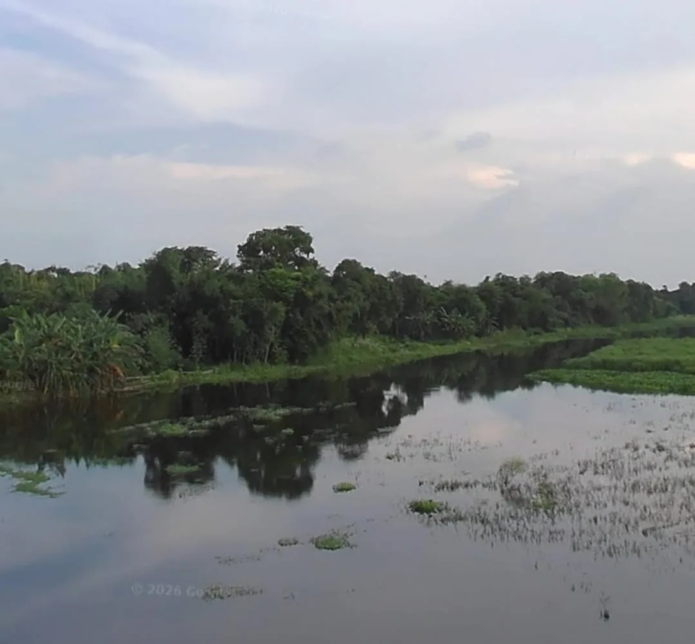
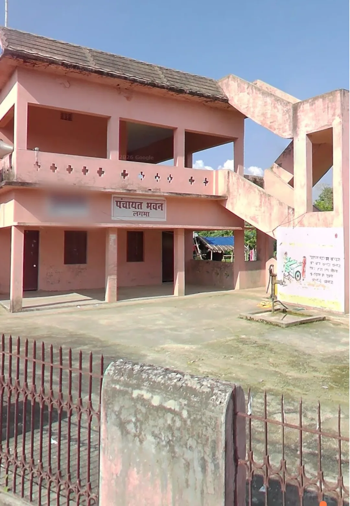
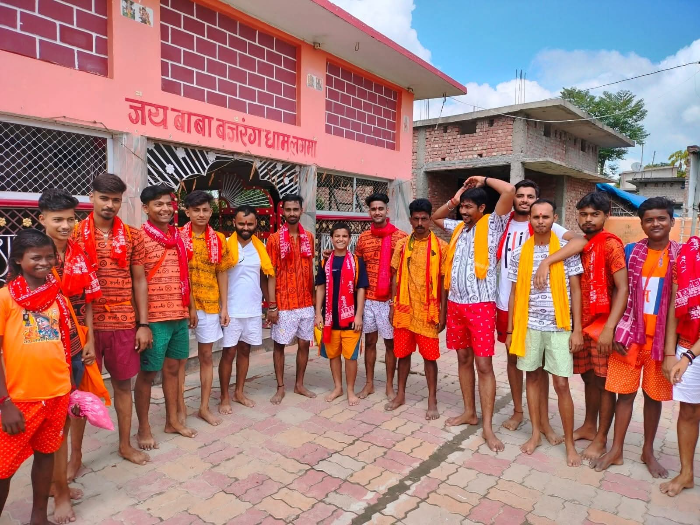
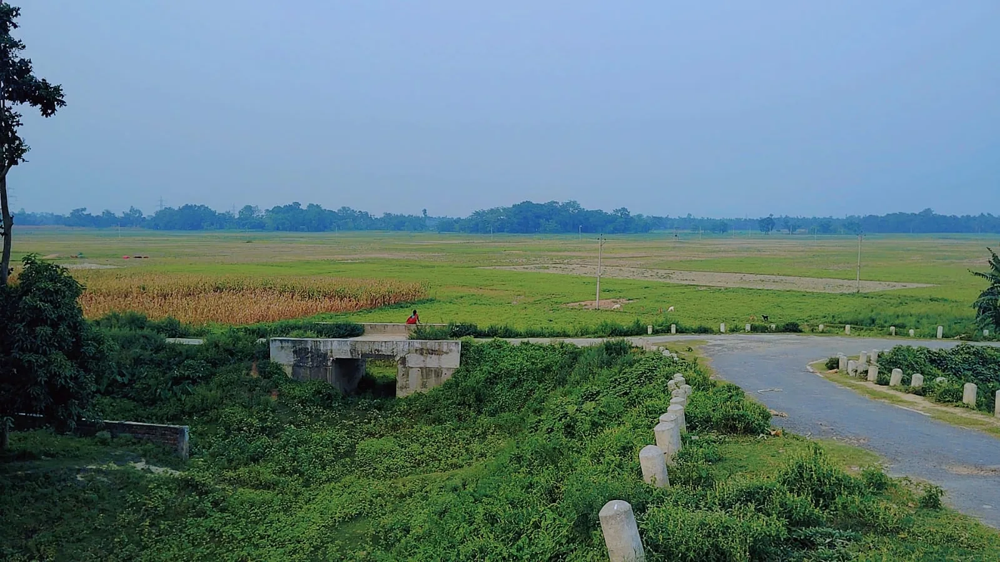
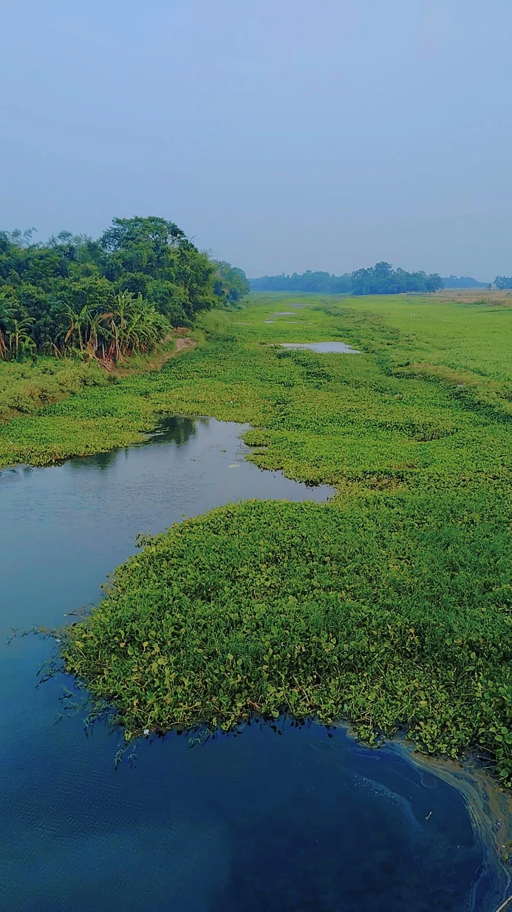

Saharsa, Bihar
Welcome to Lagma Village
A historic and vibrant village shaped by agriculture, education, temples, ponds, and community spirit.
Farming
Fertile fields and seasonal crops
Culture
Festivals, temples, and family bonds
Progress
Education, services, and local development
Digital Lagma
Gaon ki har zaroori jankari, ek smart digital jagah par.
Lagma Village website par services, notices, gallery, location, aur contacts ko clean poster-style layout mein explore karein.
About the village
Rooted in tradition, moving with progress
Lagma is known for fertile fields, fish farming ponds, mango orchards, bamboo clusters, temples, and a close-knit social life. Families remain deeply connected to the village even when education and work take them to cities.
Read the full storyQuick access
Find what you need faster
01
Public Services
School, Panchayat, health, market, banking, and local support details.
02Village Gallery
Photos from village places, facilities, community moments, and events.
03Notice Board
Latest announcements, meetings, development updates, and public messages.
04Contact Info
Village location, phone, email, and key local information in one place.
05Online Services
Aadhaar, certificates, banking support, bill payment, and digital service details.
06Kissan Help
Crop disease, dairy farming, makhana subsidy, DBT registration, and Bihar scheme links.
Service finder
Search village services
School, Panchayat, Vasudha Kendra, farming, health, banking, and market details quickly find karein.
Facilities
Important village services
Middle School
Established in 1956 and serving generations of students.

Fish Farming Ponds
Ponds support livelihoods, irrigation, and local ecology.

Panchayat Services
Local support for governance, certificates, and schemes.
Kissan Help
Farmer Scheme Guide
Fasal, dairy, makhana, subsidy, disease control, and official Bihar agriculture links.
Open Kissan HelpGallery
Village highlights



Gold Medal | Sruti Kumari | Weightlifting
Achievements
Proud stories from the village
Lagma's strength is visible in its students, public service, farming families, and residents who continue to contribute to village life from near and far.
Weightlifting: Sruti Kumari won a gold medal and made Lagma proud.
Education: Students continue to perform well in exams and careers.
Service: Many villagers contribute through government and private work.
Community: People come together for festivals, development, and support.
Journey
Lagma through the years
School established
The village school began shaping generations of students and future professionals.
Services expanding
Roads, electricity, connectivity, health access, and Panchayat services continue improving.
Digital village vision
Better information access, education, agriculture support, and community coordination.
Updates
News and announcements
Village development meeting
Community discussion on roads, drainage, education, and public facilities.
Festival preparations
Cleaning, decoration, and coordination work completed with community participation.
Help desk
Important contacts
For certificates, schemes, local development updates, and village coordination, residents can connect with the concerned local representatives.
Panchayat help desk
Personal contact details are hidden for privacy.
Please connect through the official Panchayat office for local work.
Daily essentials and gas service
Phone: 8877109792
Location
Find Lagma on map
Use the map to view the village location or open directions on your device.
Contact
Village information
VillageLagma
DistrictSaharsa, Bihar
ContactHidden for privacy
HelpUse official local office channels
Free integrations demo
Connect with Lagma online
Website ko free tools se link karke residents photo, notice, contact aur social updates easily access kar sakte hain.
Gallery submission
Google Form link yahan add karke log photo title, category aur image bhej sakte hain.
Open gallery uploadPublic note request
Residents village notice ya suggestion submit kar sakte hain, review ke baad publish hoga.
Send noteFacebook, Instagram, YouTube
Official social pages banne ke baad yahan direct links add kar sakte hain.
Share website offline
Poster, shop, school aur Panchayat notice board par website QR lagaya ja sakta hai.
sakshamlagma-dotcom.github.io/lagma-village-website